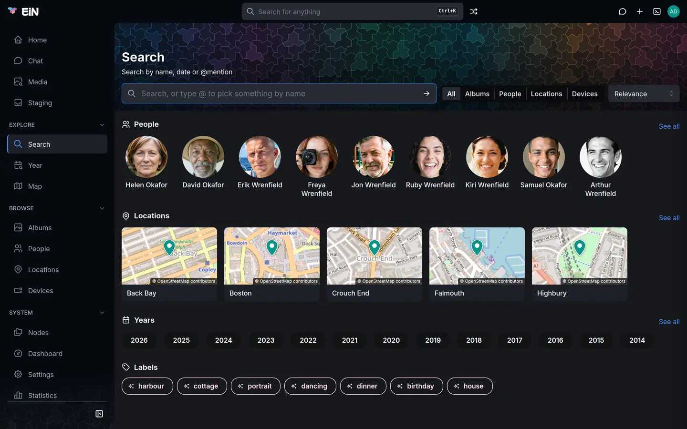

With the Archive installed, EiN searches your photos, videos, recordings and documents, down to what is in a picture and what is said in a recording, and finds the albums, people, locations and devices they belong to. This page is for everyone who searches the archive in a browser. The finder in the top bar and the Search page itself are EiN's own, and Search and the finder covers them.
Two pages for searching
| Page | Where you find it | What it finds |
|---|---|---|
| Search | Search under Explore in the sidebar, or Search for "…" in the finder | Albums, people, locations and devices: the things pictures belong to |
| Media | Media in the sidebar, or Pictures of "…" in the finder | The photos, videos, audio recordings and documents themselves |
Both pages have the same kind of search box. You can write a sentence, pick something exactly with
@, and see what the box understood as chips you can remove one by one. The address in the browser
holds the whole search, so a search can be linked, and the browser's Back and Forward step through
your searches.
Every search finds only what you are allowed to see. Files still in your staging area are left out until they are filed (Sorting in staging).
Find photos, videos, recordings and documents
The Media page shows everything as a feed, newest first, until you ask it something. Then it turns into a search, with the best matches first in one grid.
- Open Media in the sidebar.
- Click the box, Filter the media — “Anna sailing 2011”, or type @ to pick someone, and type
what you are looking for, for example
Christmas tree. - Press Enter, or click the arrow at the end of the box.
- The results take the place of the feed, the closest first. Each tile shows a match percentage, and a video its length.
- To see one kind only, choose it under Show: All, Images, Video, Audio or Documents.
- Click a tile to open it in the viewer.
To go back to the feed, empty the box, press Enter and remove any chips with their ×.

What your words are compared with
Each search looks in several places at once and puts the results together:
| What is searched | How | Try it in the Wrenfield demo |
|---|---|---|
| What a photo shows, and what a video shows in its frames | By meaning; nothing needs a label or a description first | Christmas tree, harbour |
| Text in pictures: printed and handwritten letters, postcards, recipe cards, signs | By meaning and by its exact words | the cottage is ours finds Peggy's postcard from Cornwall in 1968; self-raising flour finds her recipe for scones |
| What is said in videos and recordings | By meaning and by its exact words | the knife's gone blunt finds Arthur carving the goose at Christmas 1998 |
Documents: PDF, Word (.docx), OpenDocument (.odt) and plain text |
By what their text is about | Christmas letter finds the family newsletter from 2019 |
| Descriptions someone wrote | By meaning | |
| File names | By the name | DSC_0215, IMG_0525 |
A match in something said opens the video or recording at the moment the words are said, not at the start. A name said once in an hour of tape is found by its words. Documents have no preview in EiN and show as plain tiles; Supported files lists which files EiN reads text from.
Match percentages
When words or a picture rank the results, each tile shows a percentage. The best match is always 100%, and every other result shows how it compares with that best one. The number tells you how a result ranks within this search; it is not a measure of how sure EiN is, and the same picture can show a different number in another search.
A search of chips alone, such as a person, a label or a year, has nothing to rank by: a picture is either in it or not. Its results show newest first, without percentages, and with the date rail beside them when they span enough dates.
Show only your own files
Show only mine (only when you are signed in) limits the page, both the feed and a search, to the files you added yourself. EiN remembers the choice in this browser, not in your account. The Media page's other controls, its layouts and label pills, are covered in Media, Year and labels.
Write what you are looking for
You can type a whole sentence. When you press Enter, the box turns what it understands into chips, each with its own × to remove it, and keeps the remaining words as the description it searches for by meaning. It reads in two passes.
Years and kinds, at once, in English and Swedish:
- A year, such as
1968. Before or after one:before 1980oruntil 1980,after 2010orsince 2010, and the Swedishföre,innan,efterandsedan. Two years make a span:1990 1999. Years from 1800 to next year are read. - A kind:
photos,pictures,images,videos,films,movies,clips,recordings,audioordocuments, and Swedish words such asbilder,foton,filmer,ljud,inspelningaranddokument. On the Media page a kind sets Show; on the Search page,albums,peopleandlocationsdo.
People, places and words that describe the picture, a moment later, when your EiN has a language model (the assistant module sets one up). A small spinner in the box shows that it is reading. The search already runs on the first pass meanwhile, and runs again when the model has found more.
- A name that belongs to one person becomes that person. A name several people share becomes a chip
ending in
…, meaning every person whose name contains it. - A place becomes one of your locations, or, for a country or a city that is not one, an Area chip covering it.
me(mig) is you, and a relative of yours, such asmy motherormin mammas syster, is whoever your family tree says that is. Both need your account to be linked to your person in the archive (your account menu then has a Me row; your administrator makes the link, see Accounts and groups). Without the link, or when the tree records no such relative or more than one, or the search names two relations, the yellow note names the word and it is searched as words; name the person instead.show meat the start of a search asks for nobody.
Some examples on the Media page of the Wrenfield demo:
videos 1998sets Show to Video and adds the chip1998, leaving the box empty: every video from 1998.Peggy 1968adds1968at once. With a language model,Peggythen becomes@Peggy Wrenfield, and the box is left empty: every picture of Peggy from 1968.Peggy at the cottage at Malpas in 1968gives the same two chips and@The cottage at Malpas, so only the pictures that have all three are left.Christmas 1975adds1975and looks through that year's pictures for what looks like Christmas.
Without a language model, only years and kinds are read, and the rest is searched as words describing the picture. A name that matched nobody is searched as words too, and a yellow note says so: No person or location filter matched … — searched those words as description instead. The Search page puts it as No person or location matched … — searched as plain text instead. Close the note with its ×.
A second search adds to the chips already there rather than replacing them. To widen a search, remove a chip; to start again, remove them all.
The chips
| Chip | What it means |
|---|---|
@Peggy Wrenfield |
One person, location or device, picked with @ or understood from your words |
@Okafor… |
Every person whose name contains these words |
Area |
An area on the map, such as a country or a city |
1968, 1990–1999, from 2010, up to 1980 |
A year, a span of years, or a limit |
#harbour |
A label |
@Christmas 1998 |
An album: only what is in it (Media page) |
Looks like harbour |
Pictures that look like the pictures carrying that label |
Similar, with a small picture |
Pictures that look like that picture |
See what the box understood
Beside the box, the Interpreted filter button (an ⓘ icon) opens an account of what is being searched. It appears once there is something to explain, and not on a phone.
| Row | What it shows |
|---|---|
| Description (q) | The words searched for by meaning, or none |
| Looks like (like) | The picture searched with, in place of words |
| Names (subject-name, AND words) | Partial names, and the people each one matched |
| Exact (subject) | The people, locations and devices picked exactly |
| Area | An area on the map |
| Date (from/to) | The year or years |
| Labels (tag) | The labels |
| Album/directory | The album searched in |
On the Search page it adds a line saying that people, locations, dates and devices are what a picture has, so an album matches when it holds a picture that does.
Open it when a search brings back something unexpected. A word you meant as a description may have been taken as a place, or the other way round; remove that chip and search again.
Pick something exactly with @
- Type
@and the start of a name. A list opens with the matching people, locations, labels and devices (on the Media page, albums too), each with its kind beside it. The list matches the start of each word of a name, in order, and lets you skip words:@peg wrenfinds Peggy Wrenfield. - Pick one with the arrow keys and Enter or Tab, or click it. The box
writes
@Peggy Wrenfield. - Add more words or picks, and press Enter. Each pick becomes a chip.
Esc closes the list without picking. An @ word you type without picking from the list
stays in the box as ordinary words, and the yellow note mentions it. The Year page and the Map have
boxes of their own that take @ for a person, a location or a label; see
Media, Year and labels and
Locations and the map.
Search with a picture
When words fail you, search with a picture instead: an old print you are holding, or a place you are standing in.
- On the Media page, click the button beside the box, Search with a picture.
- Choose a picture on your device, or on a phone take one with the camera.
- The page shows the pictures that look most like it, nearest first, and the box shows the chip Similar with a small copy of your picture.
Chips and Show narrow the answer the same way they narrow words. Typing words and pressing Enter replaces the picture with your words.
The picture goes to your EiN and nowhere else, turned upright and made smaller first. EiN keeps it
in /tmp, never adds it to the archive, and removes it after 24 hours (the Hours in /tmp
setting, CFG_TMP_RETENTION_HOURS). If it
cannot be sent, a red message says the picture could not be sent, followed by the HTTP status.
To find pictures like one that is already in the archive, open it in the viewer. Its details panel shows Similar, a strip of the nearest pictures, and Show all opens the same search on the Media page.
Narrow by label
Above the results, a row of label pills shows the labels the results carry, each with a count.
Click one to add it to the search as a chip, such as #harbour. A label that every result carries
is left out, as it would narrow nothing.
A label shown anywhere else in EiN, on a picture or an album, opens the Search page for that label when you click it. When you are signed in, a search for exactly one label also offers the pictures that look like that label but do not carry it yet; Media, Year and labels explains how to label them and teach EiN what the label means.
Find albums, people, locations and devices
The Search page finds the things pictures belong to. The Search page explains its box, Show and Sort; with the Archive, Show offers All, Albums, People, Locations and Devices, and an album's card also shows its dates and how many files it holds.
What each kind is found by:
| Kind | Found by | Try it in the Wrenfield demo |
|---|---|---|
| Albums | Name, description, and what their pictures show | album christmas sets Show to Albums and finds the Christmas albums, such as Christmas 1975 and Christmas in Wellington |
| People | Name; every word must match the same person | helen okafor |
| Locations | Name | falmouth |
| Devices | Name, make, model or serial number | lumix finds Peggy's Lumix |
A person, location, year, device or label in the search narrows albums by their pictures:
@Peggy Wrenfield 1968 finds the albums holding a picture of Peggy taken in 1968. A label matches
an album that carries it or holds a picture that does.
Start from people, places, years and labels


Before you type, the Search page shows your Recent searches (Before you search), and under them the Archive's rows:
- People: the people in the most pictures.
- Locations: up to 16 locations that have a place on the map, as small maps, those placed from the most geotagged pictures first.
- Years: every year with something in it, each opening that year on the Year page.
- Labels: every label, the most used first, then suggested labels marked with a sparkle: words that at least five pictures look like although nothing carries them yet. Pointing at one shows A suggested label: N pictures look like it, and nothing carries it yet.
See all beside People, Locations and Years opens the People, Locations or Year page. A section with nothing to show is left out.
With the assistant installed, it can search for you too: ask it in Chat, and an answer that comes from a search offers Show in search to open it on the Search or Media page.
What needs the media service and a language model
EiN's media service reads every picture, recording and document as it arrives, and turns your words into something it can compare with them when you search. A language model reads names out of a sentence. Your administrator installs both; see The media service and The language model.
| What you do | Needs |
|---|---|
| Finding albums, people, locations and devices in the finder | The Archive alone |
Finding files, albums, people, locations and devices by name; @ picks; labels; years and kinds read from a sentence |
The Archive alone |
| Finding pictures by what they show; text in pictures and speech by meaning; documents; albums by what their pictures show | The media service, answering when you search |
| Searching with a picture you choose | The media service, answering when you search |
| Finding text in pictures and speech by their exact words | The media service to have read them once; not when you search |
Reading people, places and descriptive words from a sentence, and me or my mother |
A language model |
A file is found by what it shows or says only once the media service has looked at it: a picture added a few minutes ago may not turn up by meaning yet. Your administrator's Dashboard reads Catching up while that work goes on.
If your administrator chose a hosted provider for the language model, the words you type into a search box are sent to that provider to be read. A place in your words that is none of your locations is looked up on OpenStreetMap's address service, Nominatim, to find its area.
When the media service is not answering
On the Media page a yellow note appears above the results:
Incomplete answer
The content match did not answer in time, so these are filename matches only. Try again in a moment.
More lines under it can name other parts that did not answer, such as the picture match. The results come only from what EiN can match without the media service, such as file names. A search with a picture finds nothing, and its line in the note says why.
- Wait a moment and press Enter in the box again. The media service may be busy or starting.
- If the note keeps coming back, tell your administrator. Anyone signed in can check first: About EiN,
in the menu under your picture, shows the Media service tile as
Not answeringwhile it is down. Your administrator finds more on the Dashboard's Media service tab, and The media service covers what to do.
Elsewhere you see no note, only less: the Search page still finds albums, people, locations and devices by name, but not albums by what their pictures show.
When the language model is slow or away, you see no error either: the search keeps the years and kinds it read and searches the rest of your sentence as words.
Search from the terminal
The search command answers the same questions as the two pages, in EiN's
terminal:
# in EiN's terminal
search "Christmas tree" --kind photo
search --subject-name person:peggy --from 1968 --to 1968The first finds photos by what they show; the second lists everything with a person whose name
contains Peggy, taken in 1968. Its options are in the
command reference, the Archive's providers behind it, such
as search-media, are in Archive commands, and
Commands by task lists the archive's other search commands.
Related pages
- Search and the finder: the finder in the top bar and the Search page.
- Media, Year and labels: the Media feed, the Year page and labels.
- Locations and the map: finding pictures by place on the map.
- Viewing photos, videos and recordings: the viewer and its Similar strip.
- The media service: what reads your pictures, recordings and documents.